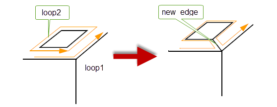
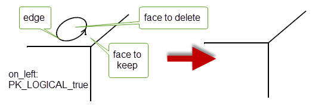

| |
Euler Operations |
| <<< Introduction To Manipulating Topology | Chapters | Controlling Redundant Topology >>> |
Euler operations are low-level functions that modify a small area of topology. Used in conjunction with functions to attach and detach geometry, these functions allow you to implement your own modeling operations, such as local operations and feature creation.
Euler operations always return a body with valid topological data-structures. However, the functions do not alter geometry - new topology created by an operation has no geometry attached, and any topology deleted by an operation has its geometry deleted first. This means that the resulting body is normally invalid, and you must attach suitable geometry to make the model valid yourself.
The fact that Euler operations are likely to produce invalid bodies makes these functions significantly different to most other PK functions. With the exception of functions to attach and detach geometry, other PK functions always return a valid body provided that it is valid when it is passed to the function.
The Euler operations are differentiated from other PK functions by including the word ‘euler’ in the function name, e.g. PK_EDGE_euler_split.
The following terms are used in the Euler functionality in Parasolid.
Edges are classified as follows:
The number of oriented edges at a vertex is as described in PK_VERTEX_ask_oriented_edges. A vertex with no oriented edges is called isolated.
A vertex is manifold if either:
This section explains the functionality provided by the Euler operations in Parasolid.
The following table summarises the Euler functionality that Parasolid offers:
|
Add or delete slit faces (faces with two edges) along an edge. |
|
|
Add an edge to a loop, or delete a vertex with an isolated edge. |
|
|
Split a vertex into two, separated by an edge, or merge two vertices, removing the intermediate edge. |
|
|
Split an edge into two lengthwise, or merge two edges lengthwise. |
|
|
PK_LOOP_euler_delete_make_edge |
Merge two loops in a face by adding a connecting edge, or delete an edge from a loop, splitting it in two. |
|
Create a new face by adding an edge between two vertices, or delete an edge and merge two faces. |
|
|
Create a new loop by joining two vertices in a loop, or delete an edge and merge two loops from the same face into one. |
|
|
Split a face by adding a ring edge, or delete a ring edge and face. |
|
|
Add a new loop to a face, or delete a bi-wire ring edge and face. |
|
Each Euler operation is illustrated in this section. For more information, refer to the reference documentation for a specific function.
This function slits an edge lengthwise, creating a new slit face. The
on_left
argument specifies whether the new face lies on the left or right side of the given edge.
Figure 33-1 Slitting an edge lengthwise
This function deletes a slit face. The given face must have either one loop and two edges or two loops each with one ring edge.
Figure 33-2 Deleting a slit face
This function splits an edge by adding a vertex. The
forward
argument determines whether the new vertex is the forward or backward vertex of the edge.
This function deletes a vertex from an edge.

This function adds a trailing edge and vertex to a vertex in the specified
loop
. The vertex used is the forward vertex of the supplied
fin
. The direction of
new_edge
is towards
new_vertex
.
Figure 33-5 Adding a trailing edge to a fin
This function deletes a vertex and its single attached edge.
Figure 33-6 Deleting a vertex and its edge
This function splits a vertex, adding an intervening edge. The vertex must be a common forward vertex of the two fins supplied to the function.
Figure 33-7 Replacing a vertex with an edge
This function merges two vertices, deleting the intervening edge.
Figure 33-8 Replacing an edge with a vertex
This function splits an edge lengthwise, replacing it with two edges joined at one end. The vertex at which to split the edge is identified as the forward vertex of the supplied fin.
Figure 33-9 Splitting an edge into two lengthwise
This function ‘zips’ two edges together by merging the vertices at one end, deleting
edge2
. There must be more than one edge at each of the vertices to be merged.
Figure 33-10 Merging two edges lengthwise
This function adds an isolated vertex and loop to a face.
Figure 33-11 Adding a loop and isolated vertex to a face
This function deletes an isolated vertex and loop from a face.
Figure 33-12 Deleting a loop and isolated vertex from a face
This function merges two loops in the same face into one by joining their vertices with an edge. Loop2 is deleted.
Figure 33-13 Adding a connecting edge to merge two loops
This function deletes an edge from a loop splitting it into two loops. The logical
forward
determines which loop is the new one.
Figure 33-14 Deleting an edge to create two loops in a face
This function joins two vertices in the same loop, creating a new face. The new face is on the right of the new edge. The vertices are identified as the forward vertices of the supplied fins.
Figure 33-15 Joining two vertices in a loop
This function deletes an edge and merges two faces and loops into one. The
on_left
argument determines which face survives.
Figure 33-16 Merging two faces and loops
This function is similar to PK_LOOP_euler_make_edge_face, but instead of splitting the face in two, it creates a new loop in the face, increasing its genus.
This function is similar to PK_EDGE_euler_delete_with_face, except that it deletes an edge which has different loops in the same face on each side of it. It merges the loops into one, decreasing the genus of the face.
This function splits a face by adding a new ring edge. The new face is always on the right of the edge.
Figure 33-17 Splitting a face by adding a ring edge
This function deletes a ring edge and a face.
Figure 33-18 Deleting a ring edge and face
This function is similar to PK_FACE_euler_make_ring_face, except that instead of splitting the face in two, it creates a new loop in the face, thus increasing its genus.
This function is similar to PK_EDGE_euler_delete_with_face, except that it deletes a ring edge which has different loops from the same face on each side, thus decreasing the genus of the face.
This function transfers a loop from one face to another. The two faces must have the same front and back shells.
Figure 33-19 Transferring a loop to a different face
This function glues two edges together by gluing fins together from two edges in the order in which they are passed to the function. The edge of the first fin passed to the function survives; the other edge is deleted.
|
Note: The curve of any edge deleted by PK_FIN_euler_glue is not itself deleted. This is an exception to the general rule for Euler functions that geometry attached to deleted topology is itself deleted. |
| <<< Introduction To Manipulating Topology | Chapters | Controlling Redundant Topology >>> |